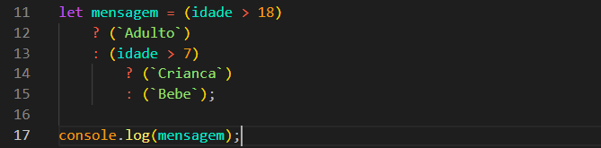
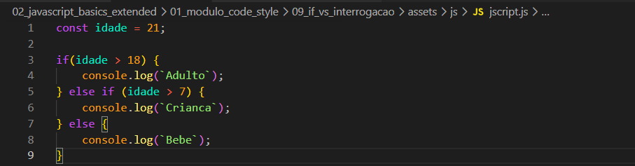

if vs ?:
Intro
Aqui iremos ver sobre condicional ternaria.
Aqui iremos ver sobre condicional ternaria.
Com o operador ternário, conseguimos resumir uma condicional em uma única expressão, tornando o código mais compacto. Ele é útil principalmente para situações simples, ajudando na leitura e organização quando bem indentado.
Aqui iremos usar como exemplo idade. Criamos uma variavel idade = 21 e depois uma condicional que verificamos se a idade é maior ou menor que 18 e imprimimos o resultado obtido em nosso console.
O operador ternário é mais utilizado quando queremos atribuir um valor a uma variável, como uma mensagem, de forma mais rápida, em vez de usar uma estrutura condicional comum como o if.

